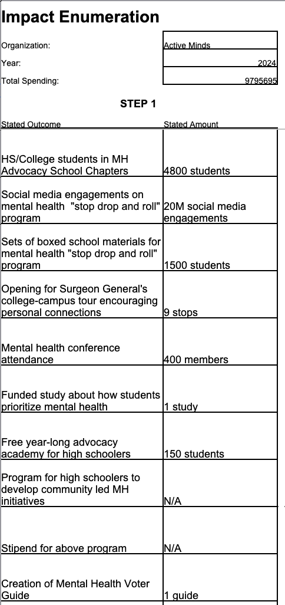
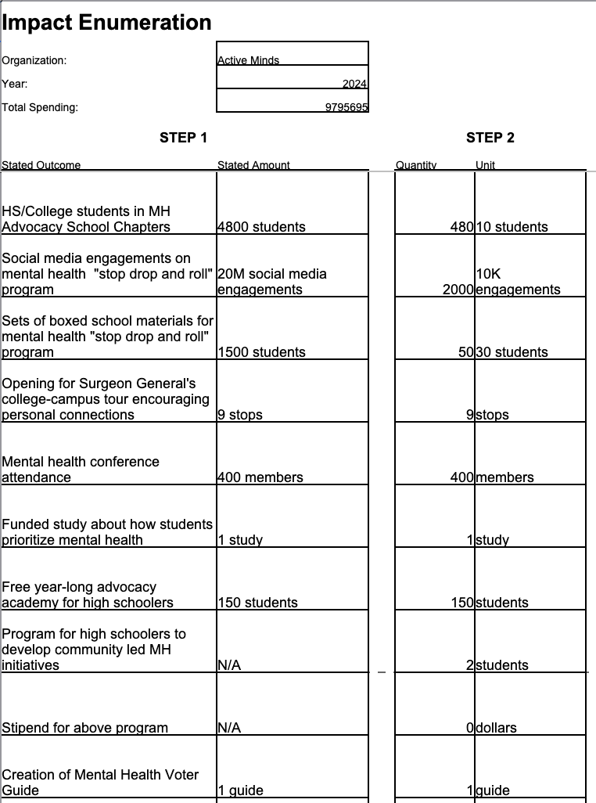
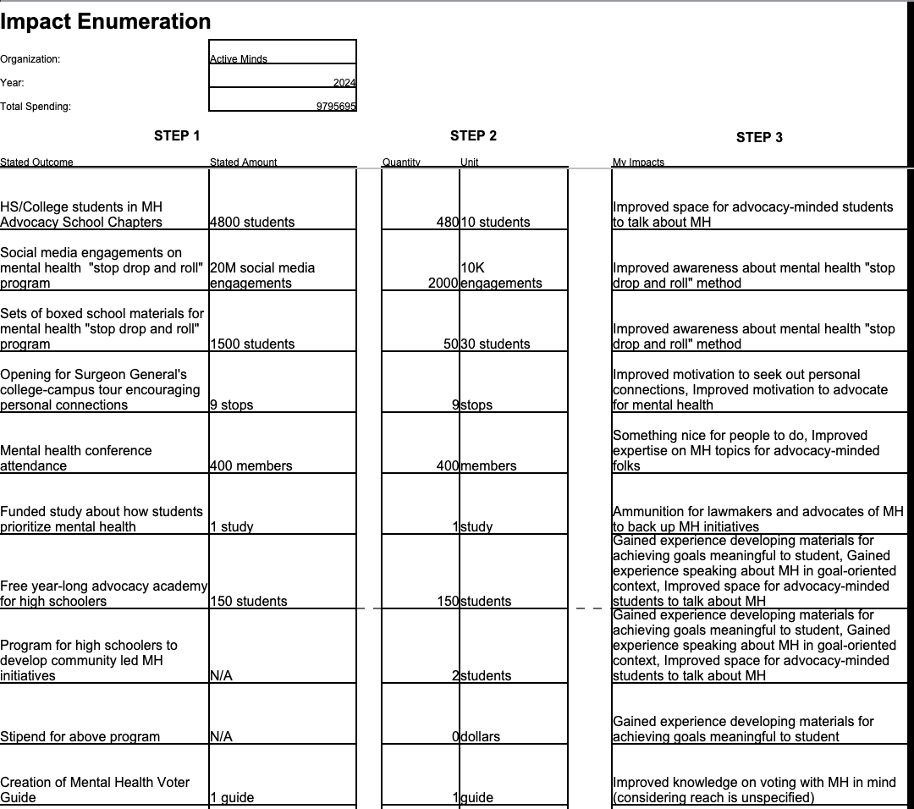
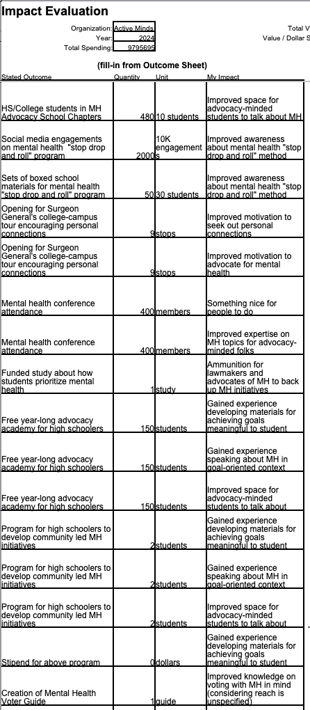
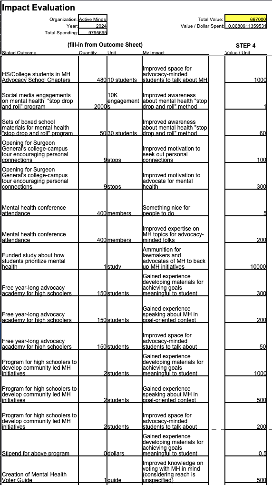
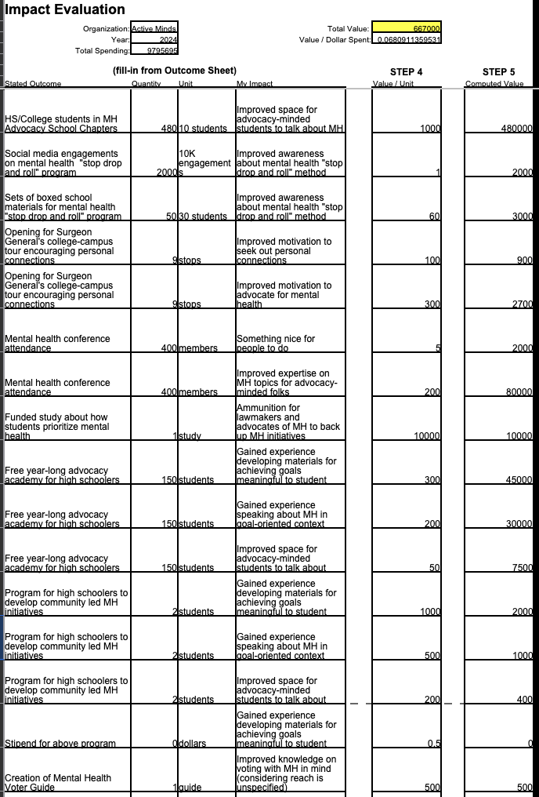

October 27, 2026: How I evaluate charities
How to fill out Impact Workbooks
Filling out an Impact Workbook consists of five steps:
- List and quantify everything the organization does and how much it spends (Steps 1 and 2),
- list all of the impacts of those actions that are valuable to you (Step 3),
- assign a numerical value to each of those impacts per quantifiable unit (Step 4), and
- tally everything up (Step 5).
Let's go through these steps one by one. We'll use
Active Minds as our example. I'll be using the
digital version, but the steps for the printed version (you will need the
Impact Enumeration and
Impact Evaluation sheets) will be the same. You will need to print out page 1 of each document once each, and then you will need some number of copies of page 2 of each document depending on how much space you use.
Step 1: List the organization's spending and actions
This step is going to be mostly objective: we're going to be gathering data from some of the organization's reports and entering it into our workbook.
Grab your Impact Enumeration sheet from the Impact Workbook. For this task, we will need the Annual Financial Report of the organzation for the most recent year that is available: this is a document that reports the financials of the company and, usually, advertises its impact to donors (this is usually what they send people at the end of the year in an email asking people to donate again!). Almost any organization you'll be looking into will have something like this, but if not find documents that are as close as you can. For Active Minds, we will need their
2024 Form 990 for financials and their
Impact Report for everything else. First, we will enter the name of the organization, the year we're considering, and the total expenses for that year. Form 990 isn't the least opaque document ever made, but it does have an entry for expenses on Page 3, line 18 totaling $9,795,695.
Note (click to expand)
Spending and expenses are different in accounting terms, but in the limit they ought to average to the same value per year generally, so we are not going to stress too much about the difference; if you have both figures, I would probably use the expenses here due to representativeness, but if you have qualms you are probably fluent enough in this that you don't need to take my advice to determine which value feels the most honest to you.
Now we are going to go through the report and try to make a list of everything that they do. The goal is to make this list as non-overlapping as possible—that is, to try to partition their work into discrete, measurable items. Sometimes this will be easy: some organizations focus on doing one specific thing and doing it well. However, others use many metrics to define the same act. Once you have this goal in mind, you can partition their work however you see fit. Specifically:
- In the "Stated Outcome" column, provide something close to their description of what they're doing that fits into this kind of partition,
-
In the "Stated Amount" column, give a description of how much of that action they're doing, using their own terms (when available).
Notes (click to expand)
- You don't need to write down every measurement of the action that they give: in the next step we'll be breaking it down into pieces that resonate with us, so pick a measurement that they give (or a couple if you're not sure) that you think might be easy to emotionally understand after scaling it up or down (size is a common obstacle for understanding the impact of an action, so we're going to rescale things later).
- You may do some trickery to get distinct components, by putting "not counting so-and-so" in one entry or another, if multiple actions are particularly enmeshed.
- Information from the Annual Report is best, but sometimes there is not much information provided. I had to Google the Surgeon General's college campus tour to see how many stops it was. Feel free to do as much research as you see fit. As you can see, for their "Action Lab" community initiative program, I really couldn't find any information about it, so I just listed the stated amount as N/A.
After going through the Active Minds Impact Report and completing Step 1, my Impact Enumeration sheet looks like this:

Step 2: Quantify the organization's actions
This step is going to be mostly subjective, but we're not yet getting into any trade-offs (questions that require you to compare one valuable thing to another): we're just going to be splitting up the stated measurements from before into chunks that make sense to us personally.
For each entry in the "Stated Amount" column from Step 1, we divide that entry into pieces such that:
- Each piece is digestible: it's easy to visualize the value we get out of it. If we have an organization which plays a game in a classroom setting, it might be easier to think about the value it brings to a whole classroom of people rather than an individual participant, simply because we may have more experience thinking in that way. In that case, we could use a unit of "1 classroom" or, if we are only given a total student count, we could approximate that with a unit of "30 students."
- The Stated Amount can be broken down as:
(number) * (Unit).
Note (click to expand)
As we saw in Step 1, some initiatives are very sparse with the information that they publish. In this case, their stipend for community initiatives (their "Action Lab") doesn't record the number of students, the values of the stipends, or much concrete info at all really (which I noticed during Step 1). I'm personally pretty untrusting of big organizations, so I didn't want to assume that they had put a lot of effort into the project if they didn't provide any information to lead me to believe that they were doing so. I chose 2 students (assuming at least that they were being honest in using the plural) and $0 for the stipend. You are free to be more generous in your expectations when information is not available, and you're also free to change this policy by organization - just be honest with yourself when doing so.
After completing Step 2, my Impact Enumeration Sheet looks like this:

Step 3: Listing personally valuable impacts
This step is going to be subjective as well, and we still won't be explicitly doing any trade-offs, but we are going to start asking some emotionally and logically difficult questions which are preparing us to perform trade-offs. We're going to be looking at each Stated Outcome and listing ways that it can impact the world which are meaningful to us.
For each entry in the Stated Amount column from Step 1, we enumerate the impacts on the world that that action can have that are meaningful to us. As was the case when we were filling out the Stated Amount column, we want to make a list which is as non-overlapping as possible. If filling out the digital version of the sheet, use commas followed by spaces to separate your answers.
This step is both emotionally and logically difficult. It requires you to both ask yourself why a certain outcome matters to you and "find all of the pieces" of impact that an action has in your eyes. Impact measurement bodies with multiple employees each with years of expertise often spend a long time thinking about questions like this. As such, I want to be clear about my goal in sharing this guide. My goal is not to train you as an impact measurement researcher. My goal is to give you a tool which can help you visualize the results of the decision-making portion of your existing emotions-values complex, so that you may determine whether to give to an organization based on that existing complex. (Of course, it would be nice if that complex improved due to clarity provided by this process, but that is at best a secondary goal.) As such, I recommend that you ask yourself primarily "What about this Stated Outcome makes me feel joy?" rather than "Why should or shouldn't this Stated Outcome make me feel joy?" The goal is to break down the Stated Outcome into pieces that feel digestible to you. Once the pieces have some tangible emotional resonance, and you don't feel like your heart is trying to do math to break down the pieces even further so that it can feel something, I would recommend that you consider this step complete.
After completing Step 3, my Impact Enumeration Sheet looks like this:

Step 4: Assigning numerical values to impacts
In this step, we are going to be actively comparing impacts against each-other. An explicit request to undergo this process is famously met with not only emotional resistance but also moral resistance, to say nothing of its difficulty. However, for anything that can be bought with money, this process is always happening within anyone with said money, conscious or not. Good luck.
Note (click to expand)
I encourage you to be brave in the face of these resistances, but also to recognize that, again, my goal is for you to understand your existing emotions-values complex, not to become an impact measurement researcher. The trade-off between research and action is a deeply personal one, much like the other trade-offs here. If, after completing the workbook, you decide you need to do more research before deciding whether to give, feel free to do so. But in that case, I encourage you to keep your Impact Workbook updated with your most up-to-date feelings, so that you can consider your motivation to do research and the effect that your research has on your confidence in your decision, so that you can make a more-informed decision about the level of confidence at which you want to start giving.
This step is the meat-and-potatoes of the "impact measurement" portion of this process. First, for bookkeeping, fill out your answers from the Impact Enumeration sheet onto the Impact Evaluation sheet, as follows (note that if you are filling this out digitally then this process will be done for you automatically):

We continue with the Impact Evaluation sheet. For each row, consider the Unit column alongside the My Impact column. Your goal is to assign a value to the amount the impact listed in My Impact that would come from a single Unit of the Stated Outcome, and put it in "Value / Unit." This secretly requires us to two questions simultaneously:
- How much of this impact comes from one Unit of the Stated Outcome?
- How much do I value the impact in My Impact?
However, I believe that due to the often-hard-to-measure nature of some of these impacts, it is best to group these two questions together, both on paper and psychologically.
The most important question to ask here is "by what measuring stick am I supposed to assign these values?" For example, if you recognize that the good feeling you get from giving isn't always proportional to the amount of value you think something "should" have on paper, then filling this column out with emotions would give different results than if we filled it out with on-paper values.
Fill out the Value / Unit column using your "values," rather than how good you feel from seeing the impact occur. Although values are very subjective, and we speak a lot about joy on this page, the goal of this workbook is for you to have an evaluation that is a function only of the facts and your values, and not a function of your emotions. Most people, for example, feel more emotional benefit from helping people more similar or proximate to them in one way or another (usually depending on the kind of similarity or proximity). However, many do not believe that this emotional distinction is morally founded. This document would allow such a person to say the following:
"After filling out this workbook, I can see that this charity that improves the quality of life in another country is 100 times more effective than that charity which operates in my hometown. I may want to give some money to charities in my hometown for the personal emotional benefit and to motivate myself to be a lifelong giver, but I should really be thoughtful about the split of giving with that 100-to-1 ratio in mind."
Expanding on a similar scenario, some may believe in ordo amoris, basically, that this distinction is morally grounded. A person like this considering the same two charities might say something like
"I believe that I should value people in my hometown 5 times more than people in another country. After seeing this 100-to-1 ratio, I now realize that my belief in ordo amoris is trumped by the relative effectiveness of this charity 20 times over."
These examples are purely theoretical, of course :)
Another question you may ask is "what does the number 1 correspond to?" or "what are my units of value?" It depends what kinds of organizations you're looking into and your personality. I personally used 1 unit of value to mean "I think this is worth the amount of value that $1 provides to me." Be cautious if you use dollars: we aren't looking for how much the impact actually costs to implement! We are looking at how much value it has to you.
Finally, beware of the
counterfactual: the outcome that would have happened without the intervention of your organization in question. This is a famously-hard portion of this problem. For us, just try to keep it in mind. The more you know about what would happen otherwise, the better a sense of the impact of an organization you'll have.
I recommend you take a look at some real research surrounding the impacts of some of these things if you have the energy, especially if your values are particularly aligned with researchers in some aspects. I did a lot of looking around for research in terms of
WELLBYs when getting a sense for the value of some of these, both in this example and when looking at other organizations. You'll rarely find an exact match for your situation though, so don't spend forever looking for something like that.
After completing Step 4, my Impact Evaluation sheet looks like this (yours will not have the two boxes in the top-right filled out yet if you are using the printed version:

Step 4.5: Reconcile your numerical values with each other
After completing Step 4, look at all of your values alongside each other. In particular, if you have done multiple Impact Evaluation sheets, look at the values you just filled out alongside the values you filled out on other sheets. With the above considerations for the finiteness of life in mind, see if there are any pairings which feel out of line with your values. Feel free to update any values. I don't recommend doing this for a long time, since we are just trying to understand your values rather than make them fully consistent, but I think a "spot check" at this stage can do a lot of good.
Step 5: Tally everything up
This step will involve doing some addition and multiplication.
Multiply the Quantity column by the Value/Unit column and put the answer in the Computed Value column. Add all of your Computed Values up and put the answer at the top of the page in the Total Value box. Divide the Total Value by the Total Spending and put the answer in the Value / Dollar Spent box. (In the digital version these will be done for you.)
After completing Step 5, my Impact Evaluation workbook looks like this:

Congratulations! You have filled out an Impact Workbook! Hopefully the process helped you understand your organization of choice and yourself.